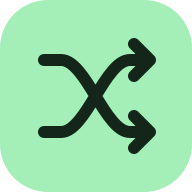

A FRESH ORDER
Your playlist.
Mixed up.
Shuffle the full playlist and save its new order in Spotify.
Getting ready…
Keep this page open while shuffling.
Open playlist in Spotify ↗Setup
Checks the connection without changing your playlist.